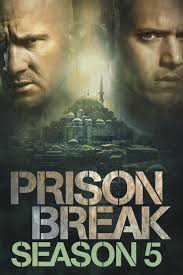

Prison break est une série américaine de 90 épisodes de 43 minutes créer par Paul Scheuring.Prison Break est diffusée en France de 2006 à 2009.La série tourne autour de l'histoire de deux frères.Lincoln Burrows est condamné à mort pour un crime, son frère Michael Skoffield,un génie decide de lui venir en aide en s'évadant.

Dynastie
Elite